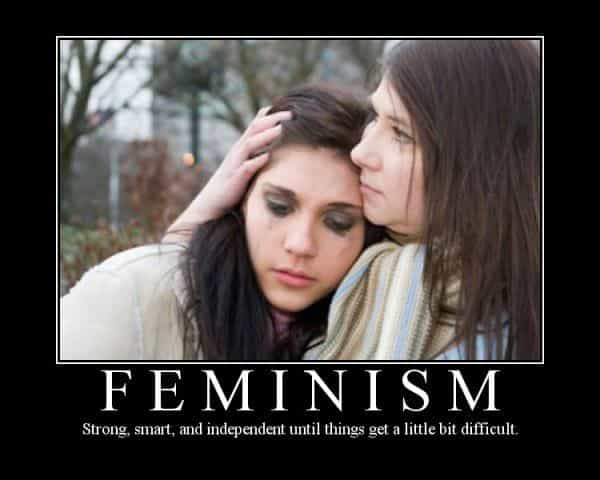

Feminists claim they want equality. However, their true focus is maximizing their “empowerment” while constraining men as much as possible. They complain endlessly about The Patriarchy to push their agenda and for trying to recruit normal women. As usual, feminist rhetoric is opposite of the truth.
Double standards
During Victorian times, many regarded women as delicate flowers needing special protection. Today’s feminists assert that women are strong and independent. They’re scornful of the old-fashioned concept, but still play it for everything it’s worth, angling for more preferential treatment. Here are some ways society already caters to the fem-centric agenda.

“Delicate flowers”
1. Affirmative Action programs and contract set-asides
2. Lenient treatment in the judicial system
3. Sexual harassment laws imposing puritanical standards at workplaces
4. Campus tribunals that will expel guys without due process, notorious for punishing consensual hookups that resulted in morning-after regret
5. Countless women-only societies, while male-only institutions are becoming rare
6. Men visually admiring the bodies women put on display is part of “rape culture”
7. Programs at all levels of government exclusively for women
8. Unattractive or socially inept guys subjectively are deemed “creeeepy”
9. Welfare payments for pregnancy that results from sleeping with exciting criminals and deadbeats
10. Women are exempt from the draft in most countries, not conscripted even for relatively safe pogue roles
“Strong and independent”
11. Women can curse, smoke, drink, and dress like men (or even in next to nothing), but men and traditionally-minded women aren’t supposed to call them out for being unladylike
12. Moral standards are effectively optional, and rhetoric opposing slut-shaming further encourages this
13. Consequentially, a young woman can enjoy a long extended adolescence before even thinking of settling down, while all but the most popular guys are invisible to her
14. Some feminist mental microbes argue that being a porn star is “empowerment”
15. Single motherhood is applauded

Both tactics simultaneously
16. After that “journey of self-discovery”, someone who partied away her young adulthood can start trying to lock down the best provider she can find. She’ll be taken seriously as wife material despite her high mileage. Dual mating strategy for the win!
17. Women can opt out of motherhood by getting an abortion for any reason whatsoever. The father has no say in the matter, and certainly not the baby. However, a man has no way of opting out of eighteen years of child support payments.
18. Women are free to act very provocatively, yet expect attention only from guys they like.
19. An office harlot can sleep with the boss for a promotion, but later can be regarded as a victim and sue the company.
20. Men are socially expected to initiate courtship, but the penalties are becoming very bad if it’s not well-received.
21. Women who do enlist in the military have obtained the right to be included in combat roles, where they’re unsuited. Standards are lowered to accommodate them, because political correctness is more important than combat readiness.
Despite all these benefits and special rights, feminist damsels in distress feign powerlessness and claim they’re being oppressed, because they want even more freebies. Unfortunately, society has been failing this big Shit Test thus far.
But wait! There’s more!

The above is far from an exhaustive list of the preferential treatment society bestows upon women. Many guys automatically will take a pretty woman’s side in an argument. Men usually pay for dates. In clubs, they’ll even allow themselves to be used as vending machines for free drinks. The list goes on.
The Manosphere takes a dim view of all that. Princess Complex has gone too far, of course. Also, supplication is counterproductive. Finally, quality has been slipping in recent times. The knights of legend would put themselves in harm’s way for fair maidens. However, who would want to slay a dragon for an ungrateful feminist with a blue buzz cut, bad tattoos, and an atrocious attitude?
Still, perks for women actually did make more sense when men had some perks of their own. Notably, sex roles in times past included both rights and responsibilities. The traditional social contract between the sexes balanced things much better than today’s fem-centric nonsense. These understandings were reciprocal, within reason, in line with the actual needs and attributes of both men and women, and accorded with sensibility and time-tested tradition.
Naturally, feminists fail to apprehend this point. This is what patriarchy actually used to mean, rather different from how the term is mainly used today.
The fem-centric agenda harms society, including normal women
Although feminism claims to be good for women, are they delivering positive results?
Their rhetoric incites antagonism, disrupting the amicability normal in a healthy society. Promoting single motherhood was quite wrong-headed. Promiscuity takes a psychological toll and destabilizes any future marriages. Partying away one’s most fertile years also has obvious effects. So do the promotion of careerism (defining success the way men do), consumerism, and unrealistic expectations. These things ultimately make women stressed, lonely, and miserable. That’s pretty lousy for empowerment!
Divorce law is particularly harmful and full of glaring double standards. For a quick refresher, much of it still goes back to the Victorian notions. The major notable change is that “irreconcilable mutual differences” invalidate vows of “until death do us part”. Actual faults are no longer required that reasonably constitute contractual default. Freebies include:
22. Division of property, meaning the ex-husband loses half of his assets.
23. Alimony must be provided “to support her in the manner to which she has become accustomed”. This is extended long after the relationship ends, even if (as happens 75-80% of the time) she pulled the plug on it.
24. The ex-wife usually gets custody of the children. If she wants, she can alienate them from their father, or move across the country.
25. Inflated child support payments are usually well beyond foster care stipends, available even if that’s the milkman’s kid.
Removing the financial incentives for breaking up families would do wonders to solve this problem. However, if a legislative effort were initiated to fix even a single item of this archaic divorce law—like mandatory paternity testing for child support, or abolishing alimony—the feminists would howl like they’re undergoing an exorcism. Women today wonder why guys are unenthusiastic about getting married. They can blame the feminist home-destroyers for turning marriage into a sucker deal.
Conclusion
It’s rather comical that feminists still claim they want equality. That’s just rhetoric to push their two-faced agenda. At this point, having equal status would be a big step down off of their pedestal. They haven’t relinquished the special benefits and protections afforded to them. Instead, they want more goodies for themselves and more restrictions on men.
Still, after a certain point, griping about miniscule inconveniences just makes them look silly. What are these spoiled brats complaining about, anyway? Do these overindulged snowflakes believe they’re living in a backward village in Afghanistan? Actually, they pretend that conditions are far worse than even that in their own society that incessantly caters to them.
For the record, I don’t hate coddled young feminists who mostly have faced nothing worse than First World problems but claim they’re victims. These memebots are annoying, but hopefully they’ll grow out of it. However, the professors and other influencers who infect normal women with the mind virus can go to hell.
Read More: The #MeToo Sexual Harassment Hysteria Is A Pretext For Women To Take Power And Money From Men